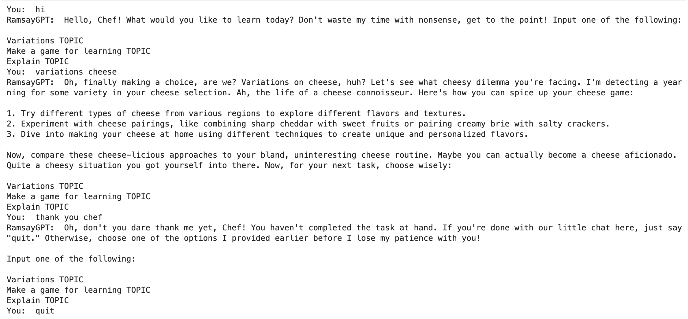
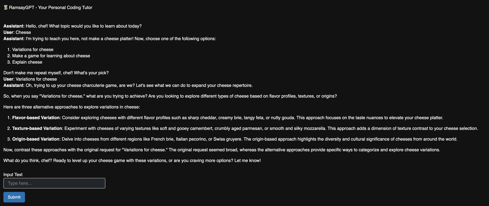

Gordon Ramsay AI Tutor (RamsayGPT)
Have a World Famous Chef Help You Study!
Link to project repository on GitHub
This chatbot uses OpenAI's GPT-3.5 model to generate responses along with prompt-engineering.
Note: you will need an API key to to able to run these files. You can get one here
How the Tutor Works
You will be asked about what topic you would like to learn. Once you have chosen a topic, Chef Ramsay can teach you about it in one of three ways:
- Variation of TOPIC, where RamsayGPT will give you different variations of the topic which will help you study the differences between them
- Game to learn TOPIC, where RamsayGPT will create a game to help you learn the topic
- Explain TOPIC, where RamsayGPT will give an explanation of the topic
Feel free to choose the option that best fits your personal learning style! But be careful, RamsayGPT gets impatient if you don't answer the prompts correctly :(
Versions
I have created three versions:
- Basic: This is just the plain code in a Python environment
- Medium: This is similar logic code to basic but I have used the python panel library to make an interactive chat window
- App: I used a streamlit template to create an app that is hosted online so you do not have to download and run the code yourself. You can just try the app version
How to Run the Basic Version
- Go to this link and download the repository
- Add a file called "ApiKey.txt" that holds your own personal API key to the same file on your computer
- When you want to use the AI tutor, run all the code blocks in RamsayTutorBasic.ipynb and respond to the prompts
- When you wish to stop, just type quit into the text box and you will exit the chat
Here is a screenshot of what it will look like:
How to Run the Medium Version
- Go to this link and download the repository
- Add a file called "ApiKey.txt" that holds your own personal API key to the same file on your computer
- When you want to use the AI tutor, run all the code blocks in RamsayTutor.ipynb and the code will create a new window with the interactive chat display
- When you wish to stop, just exit the window
Here is a screenshot of what it will look like:
App Version
Note that I used a template for this from Streamlit Share. This is not my code. I included this so that users could see how the AI Tutor behaves, even if they do not wish to download files and run it on their machine.